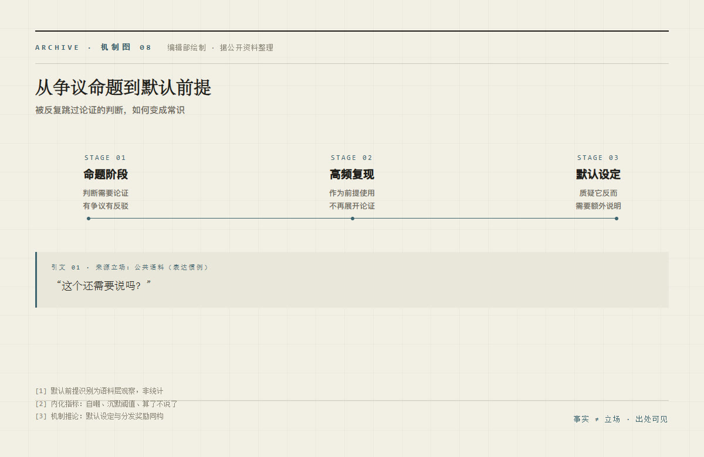

什么时候起，它不需要被证明了
常态化观察 · 之一 · 范围：公共语言里哪些表述已成默认前提。语料层观察，非统计。
这一篇进入常态化。产生期回答「条件怎么来的」，演变期回答「机器怎么转的」，常态化回答一个更安静的问题：从什么时候起，这套叙事不再被质疑，成了常识。「常识」的识别不靠问卷，靠语料——看哪些判断在公共表达里已经不需要论证，直接当前提出用。本篇是语料层观察，方法是归纳，不是统计；所有例子指向句式结构，不指向群体。
一个判断是不是「默认前提」，有个简单的试纸：质疑它的时候，是谁需要额外解释。命题阶段，提出判断的人举证（「我认为甲，理由是乙」）；默认阶段，质疑判断的人举证（「你怎么连这都不认？」）。当举证负担完成倒置，命题就完成了从「观点」到「常识」的相变。相变不发生在一个日期上，发生在无数次跳过论证的复现里。
用这个试纸去扫公共语料，能扫出一组共用句式：「这还需要说吗？」「都这个年代了」「懂得都懂」「不会吧不会吧，还有人不知道」。这些句子的功能不是陈述，是关闭论证——把在场的人分成「自己人」（默认接受）和「落伍者」（需要被教育）。注意：这里分析的是句式功能，不是任何具体观点的对错。任何立场的人都会用关闭论证的句式，问题是当某一类判断系统性地享受免论证待遇时，公共讨论的地基就换了一批人来打。
回到专题对象。在「男性叙事」相关的议题结构里，语料层可以观察到若干免论证前提，例如：涉及两性冲突的事件中，「女方是受害方」作为无需论证的起点出现在大量媒体框架与评论里；「男的肯定有问题，不然人家为什么闹」作为归因默认项；「你要自证清白」作为程序义务之外的道德义务。这些判断未必都错——其中一些在统计上甚至可能多数成立——问题不在对错，在免论证。免论证意味着：例外案例没有语料空间，反例需要举证成本，而持有反例的人算完账就不出场了（见篇 07 的沉默阈值）。
内化的证据有两个可观察的形态。一是自嘲：「男的不配」「算了，我不配说话」这类自嘲梗的流行，说明当事人已经用戏谑内化了默认设定——自嘲是投降的安全形态，它既不挑战设定，又保留一点体面。二是沉默阈值的下调：从前要到被围攻才退出，现在看到议题预设就绕开。「算了不说了」从一句台词变成一种条件反射。[2]
为什么默认设定与分发奖励同构？把篇 01–05 连起来看就明白：情绪型内容互动高 → 高互动内容排前 → 高频复现 → 复现产生熟悉感 → 熟悉感被大脑当作真实（曝光效应）→ 默认设定成立。每一步都合规，每一步都无恶意，连起来就是一台常识制造机。它不生产谎言，它生产「不需要证明的东西」。
引文 01 · 来源立场：公共语料（表达惯例）
"这个还需要说吗？"
—— 公共表达中的高频句式（据公共语料观察）。它不陈述内容，只关闭论证；作语言标本引用。

▲ 图 08：从争议命题到默认前提 · 编辑部绘制。识别方法见注 [1]。
本篇的价值不在批判哪条前提，在把「默认」这个状态标注出来。语言学有个基本观察：能被说出来的预设，才可能被检验；说不出来的预设，支配人而不被人看见。所以本篇对读者只有一个要求——下次在评论区看到「这还需要说吗」式的句子时，停一秒，问一句：它替我省略的那步论证，是什么？答案可能是「统计上成立的经验」，也可能是「一个被复读出来的偏见」。两种答案都值得，唯独跳过不值得。
对称义务也写明：本专题自己的判断同样是可被标注、可被质疑的——包括「男性叙事正在失语」这个母命题本身。它也是从观察里归纳出来的命题，不是免论证前提。谁要用「懂得都懂」来拥护本专题，谁就在用本篇反对的方式拥护本篇。这是方法的自洽要求。
默认设定确立之后，接下来就到了本专题的核心现场：当正式表达渠道失效、默认设定又把出口堵死，普通人会怎么做？答案是一种不体面、但确实开始奏效的策略——「魔法对轰」。下一篇，进核心区。
注 · SOURCES
[1] 默认前提识别方法（举证负担倒置试纸）为本文提出的分析工具，系归纳性框架，非既有学术量表。
[2] 自嘲梗与「算了不说了」现象，据公共语料观察；内化程度无公开统计，系描述性判断。
[3] 「曝光效应—熟悉感—真实性判断」链条引自心理学常识层面的描述，非针对具体平台的实证研究。
[4] 本文所列默认前提为语料层归纳，不统计其在人群中的实际认同率；不指控任何群体「制造」了这些前提。
口径说明
本文为社会学观察，不站任何性别立场，作者性别不作为论证依据。默认前提是语料层分析对象，其对错不作裁决；母命题本身同样可被质疑。拆解机制是为了理解，不是行动指南。
出口：把默认前提标注出来，是重启论证的唯一前置动作。可讨论的制度方向：媒体与平台在冲突性报道中标注「框架假设」——用一行小字写明「本文默认采信单方陈述，未经另一方证实」。这一行字不解决任何案子，但它把免论证的东西重新变回待论证。